Code
| age | chol | target | |
|---|---|---|---|
| 527 | 62 | 209 | 1 |
| 359 | 53 | 216 | 1 |
| 447 | 55 | 289 | 0 |
CSCI-866-001: Data Mining & Knowledge Discovery

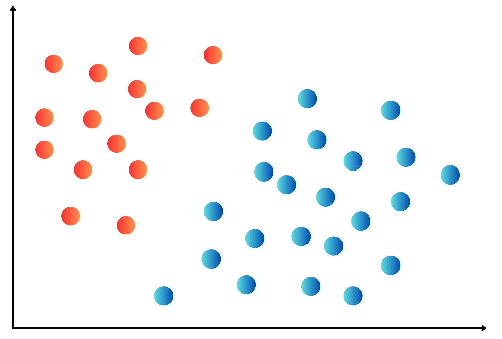
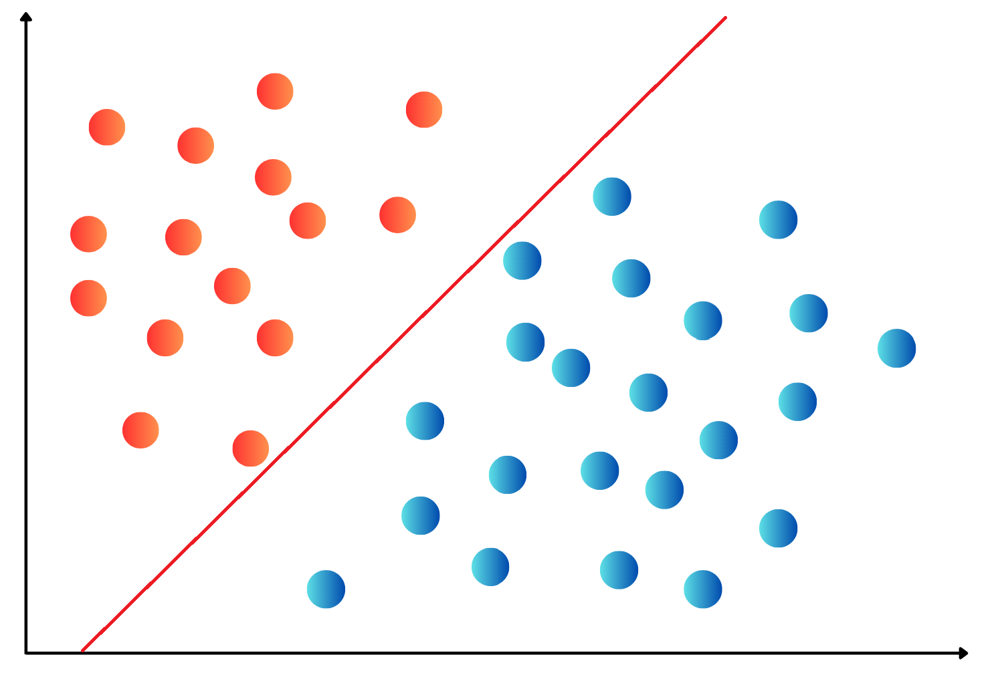
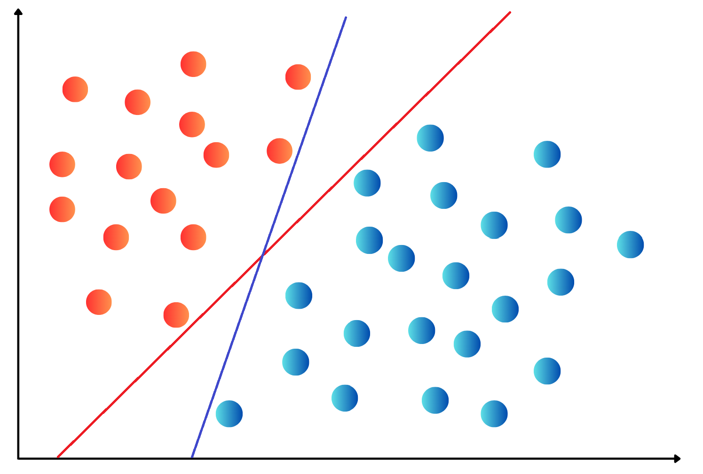
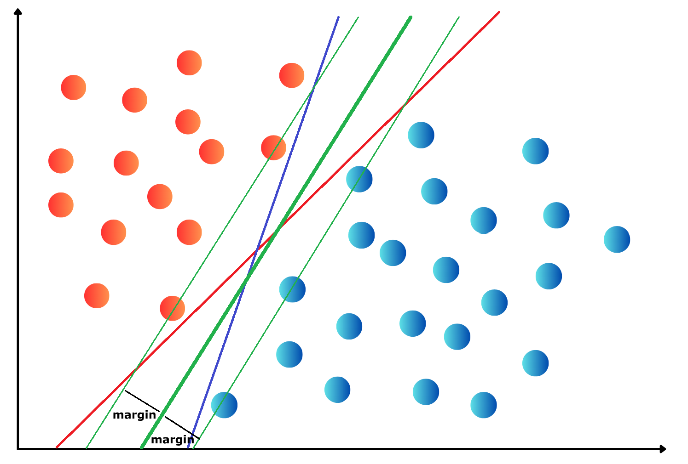
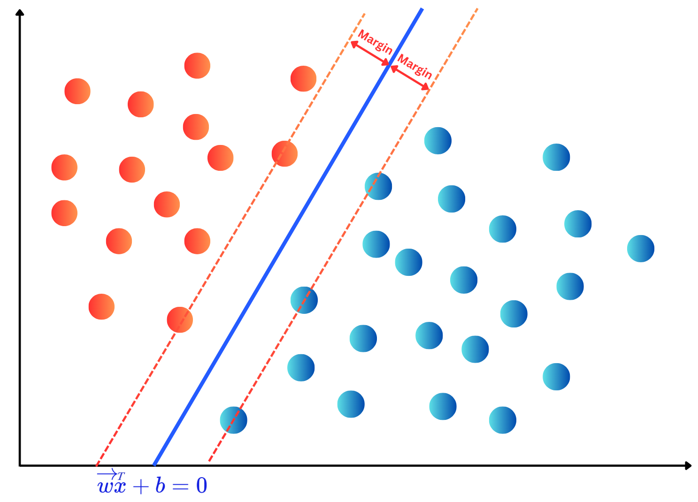
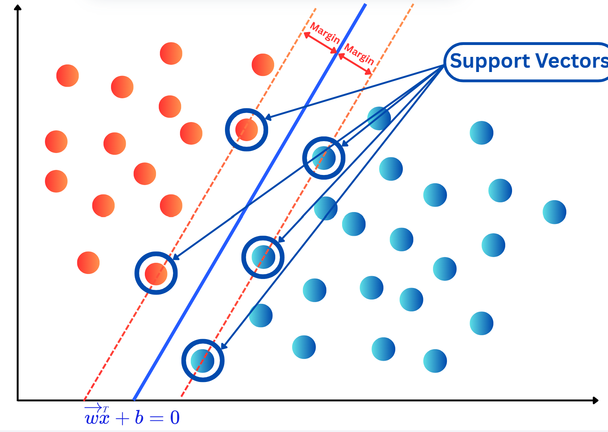
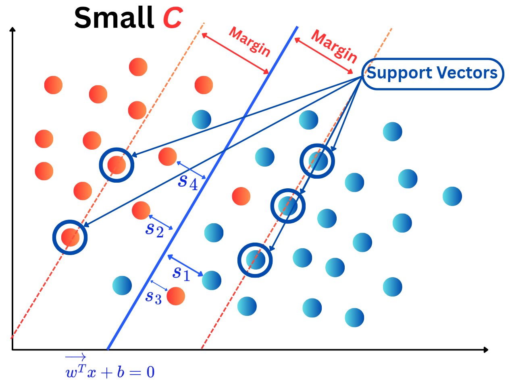
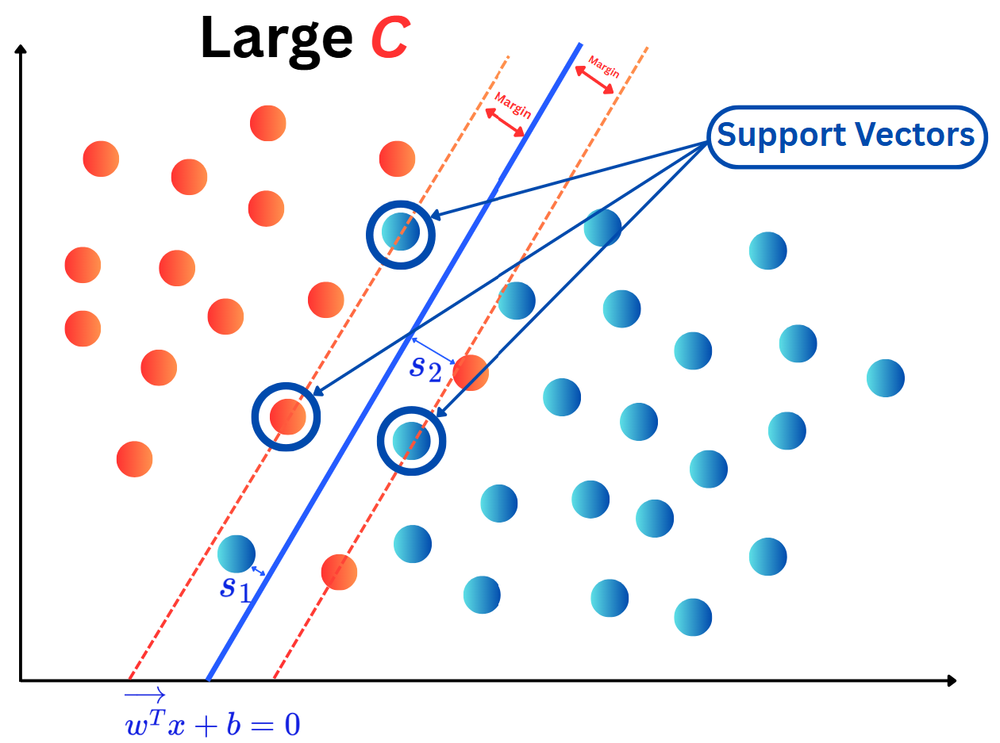
OneHotEncoding.import numpy as np
import pandas as pd
from sklearn.model_selection import train_test_split, GridSearchCV
from sklearn.preprocessing import OneHotEncoder
data = pd.read_csv(path + "/heart.csv")
quan_vars = ['age','trestbps','chol','thalach','oldpeak']
qual_vars = ['sex','cp','fbs','restecg','exang','slope','ca','thal','target']
# Convert to correct types
for i in quan_vars:
data[i] = data[i].astype('float')
for i in qual_vars:
data[i] = data[i].astype('category')
data.drop_duplicates(inplace=True)
# Train test split
from sklearn.model_selection import train_test_split
X, y = data.iloc[:,:-1], data.iloc[:,-1]
X_train, X_test, y_train, y_test = train_test_split(X, y, test_size=0.2, stratify=y, random_state=42)
from sklearn.preprocessing import StandardScaler
scaler = StandardScaler()
encoder = OneHotEncoder(drop='first', sparse_output=False)
# OnehotEncoding and Scaling
X_train_cat = encoder.fit_transform(X_train.select_dtypes(include="category"))
X_train_encoded = scaler.fit_transform(np.column_stack([X_train.select_dtypes(include="number").to_numpy(), X_train_cat]))
X_test_cat = encoder.transform(X_test.select_dtypes(include="category"))
X_test_encoded = scaler.transform(np.column_stack([X_test.select_dtypes(include="number").to_numpy(), X_test_cat]))
# KNN
from sklearn.svm import SVC
svm_model = SVC(kernel='linear', random_state=42)
# Define the hyperparameter grid
param_grid = {'C': [0.1, 0.2, 0.25, 0.3, 0.4, 0.5, 0.75, 1]}
# Perform GridSearch for optimal C
grid_search = GridSearchCV(svm_model, param_grid, cv=20, scoring='accuracy')
grid_search.fit(X_train_encoded, y_train)
# Get the best parameter
best_C = grid_search.best_params_['C']
# Train final model using best C
final_model = SVC(kernel='rbf', C=best_C, random_state=42)
final_model.fit(X_train_encoded, y_train)
# Predict on test set
y_pred = final_model.predict(X_test_encoded)
from sklearn.metrics import roc_auc_score, accuracy_score, precision_score, recall_score, f1_score, confusion_matrix, ConfusionMatrixDisplay
test_perf = pd.DataFrame(
data={'Accuracy': accuracy_score(y_test, y_pred),
'Precision': precision_score(y_test, y_pred),
'Recall': recall_score(y_test, y_pred),
'F1-score': f1_score(y_test, y_pred),
'AUC': roc_auc_score(y_test, y_pred)},
columns=["Accuracy", "Precision", "Recall", "F1-score", "AUC"],
index=["LSVM"])
test_perf| Accuracy | Precision | Recall | F1-score | AUC | |
|---|---|---|---|---|---|
| LSVM | 0.852459 | 0.852941 | 0.878788 | 0.865672 | 0.850108 |
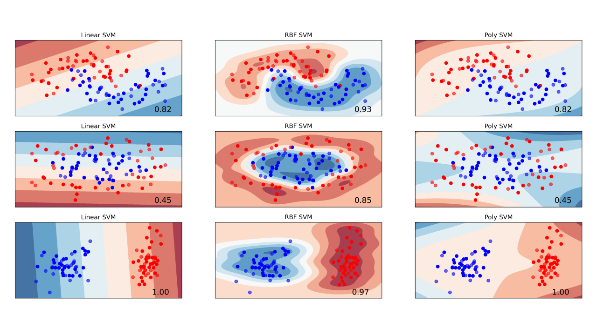
svm_model = SVC(kernel='rbf', random_state=42)
# Define the hyperparameter grid
param_grid = {'C': [5, 6, 7, 8, 10, 12.5, 15, 17, 20, 30, 45, 50]}
# Perform GridSearch for optimal C
grid_search = GridSearchCV(svm_model, param_grid, cv=20, scoring='accuracy')
grid_search.fit(X_train_encoded, y_train)
# Get the best parameter
best_C_rbf = grid_search.best_params_['C']
# Train final model using best C
final_model = SVC(kernel='rbf', C=best_C_rbf, random_state=42)
final_model.fit(X_train_encoded, y_train)
# Predict on test set
y_pred = final_model.predict(X_test_encoded)
from sklearn.metrics import roc_auc_score, accuracy_score, precision_score, recall_score, f1_score, confusion_matrix, ConfusionMatrixDisplay
test_perf = pd.concat([test_perf, pd.DataFrame(
data={'Accuracy': accuracy_score(y_test, y_pred),
'Precision': precision_score(y_test, y_pred),
'Recall': recall_score(y_test, y_pred),
'F1-score': f1_score(y_test, y_pred),
'AUC': roc_auc_score(y_test, y_pred)},
columns=["Accuracy", "Precision", "Recall", "F1-score", "AUC"],
index=["RBF-SVM"])])
# Polynomial 3 kernel
svm_model = SVC(kernel='poly', degree=3, random_state=42)
# Perform GridSearch for optimal C
grid_search = GridSearchCV(svm_model, param_grid, cv=5, scoring='accuracy')
grid_search.fit(X_train_encoded, y_train)
# Get the best parameter
best_C_poly = grid_search.best_params_['C']
# Train final model using best C
final_model = SVC(kernel='poly', degree=3, C=best_C_poly, random_state=42)
final_model.fit(X_train_encoded, y_train)
# Predict on test set
y_pred = final_model.predict(X_test_encoded)
from sklearn.metrics import roc_auc_score, accuracy_score, precision_score, recall_score, f1_score, confusion_matrix, ConfusionMatrixDisplay
test_perf = pd.concat([test_perf, pd.DataFrame(
data={'Accuracy': accuracy_score(y_test, y_pred),
'Precision': precision_score(y_test, y_pred),
'Recall': recall_score(y_test, y_pred),
'F1-score': f1_score(y_test, y_pred),
'AUC': roc_auc_score(y_test, y_pred)},
columns=["Accuracy", "Precision", "Recall", "F1-score", "AUC"],
index=["Poly3-SVM"])])
test_perf| Accuracy | Precision | Recall | F1-score | AUC | |
|---|---|---|---|---|---|
| LSVM | 0.852459 | 0.852941 | 0.878788 | 0.865672 | 0.850108 |
| RBF-SVM | 0.819672 | 0.866667 | 0.787879 | 0.825397 | 0.822511 |
| Poly3-SVM | 0.852459 | 0.875000 | 0.848485 | 0.861538 | 0.852814 |
rbf’, ‘poly’…OneHotEncoderStandardScaler, MinMaxScaler…for t = 1,2,..,T:
Prediction:
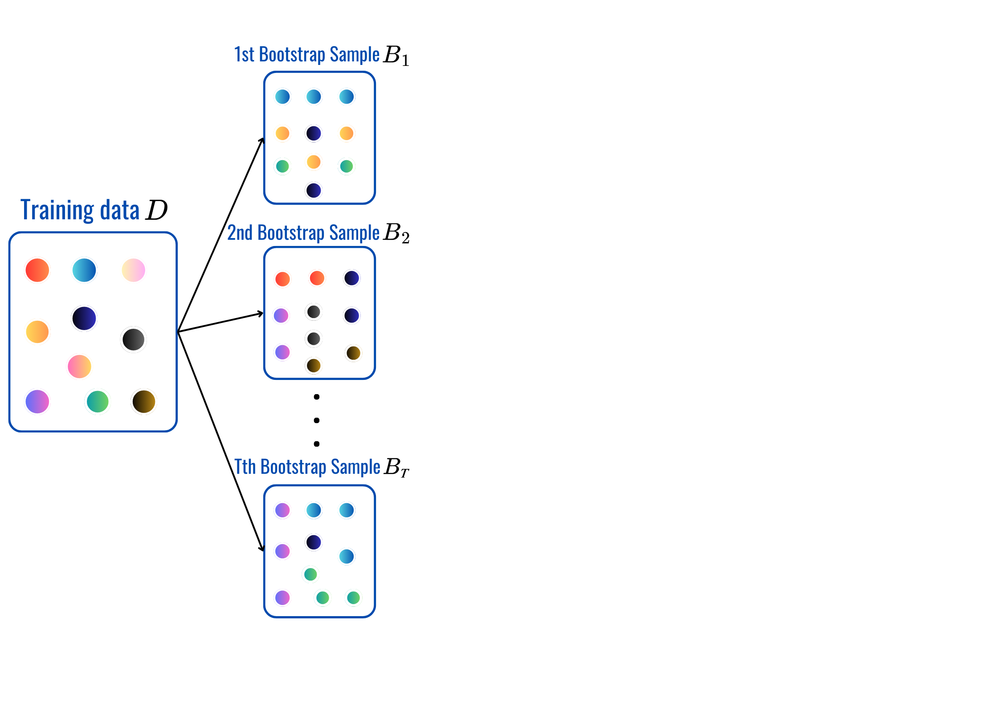
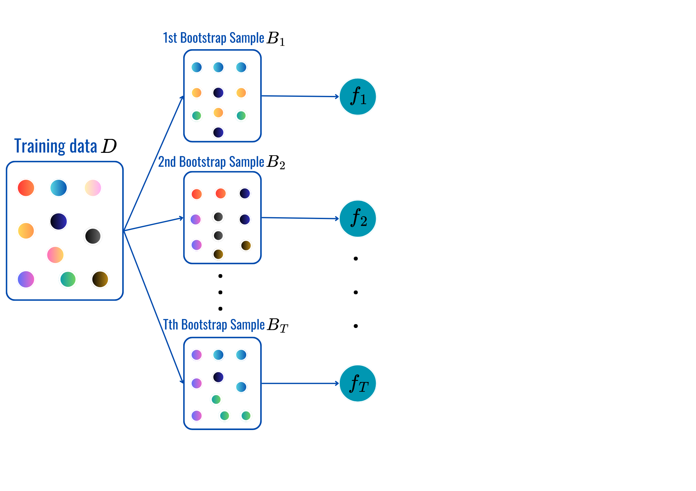
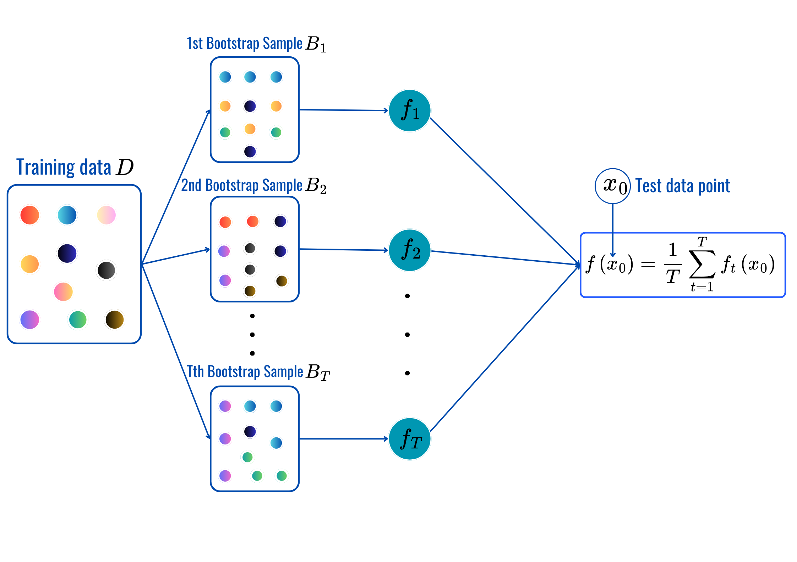
max_depth, min_sample_split, min_samples_leaf and citerion.from sklearn.ensemble import BaggingClassifier
from sklearn.tree import DecisionTreeClassifier
# Define base Decision Tree (with tunable parameters)
base_tree = DecisionTreeClassifier()
# Set up Bagging Classifier
bagging_model = BaggingClassifier(estimator=base_tree)
# Define hyperparameter grid
param_grid = {
'n_estimators': [200, 500, 700], # Number of trees in Bagging
'max_samples': [0.1, 0.25, 0.5], # Proportion of samples per tree
'estimator__min_samples_split': [2, 5, 10], # Minimum samples to split
'estimator__min_samples_leaf': [2, 3, 5, 10], # Minimum samples per leaf
'estimator__criterion': ["gini", "entropy"], # Splitting criterion
}
grid_search = GridSearchCV(bagging_model, param_grid, cv=5, n_jobs=-1, scoring='accuracy')
grid_search.fit(X_train_encoded, y_train)
# Best parameters and corresponding model
best_model = grid_search.best_estimator_
print(f"Best parameters: {grid_search.best_params_}")
# Make predictions with the best model
y_pred = best_model.predict(X_test_encoded)
test_perf = pd.concat([test_perf, pd.DataFrame(
data={'Accuracy': accuracy_score(y_test, y_pred),
'Precision': precision_score(y_test, y_pred),
'Recall': recall_score(y_test, y_pred),
'F1-score': f1_score(y_test, y_pred),
'AUC': roc_auc_score(y_test, y_pred)},
columns=["Accuracy", "Precision", "Recall", "F1-score", "AUC"],
index=["Bagging"])])
test_perfBest parameters: {'estimator__criterion': 'entropy', 'estimator__min_samples_leaf': 2, 'estimator__min_samples_split': 2, 'max_samples': 0.25, 'n_estimators': 700}| Accuracy | Precision | Recall | F1-score | AUC | |
|---|---|---|---|---|---|
| LSVM | 0.852459 | 0.852941 | 0.878788 | 0.865672 | 0.850108 |
| RBF-SVM | 0.819672 | 0.866667 | 0.787879 | 0.825397 | 0.822511 |
| Poly3-SVM | 0.852459 | 0.875000 | 0.848485 | 0.861538 | 0.852814 |
| Bagging | 0.803279 | 0.862069 | 0.757576 | 0.806452 | 0.807359 |
for t = 1,2,..,T:
Prediction:
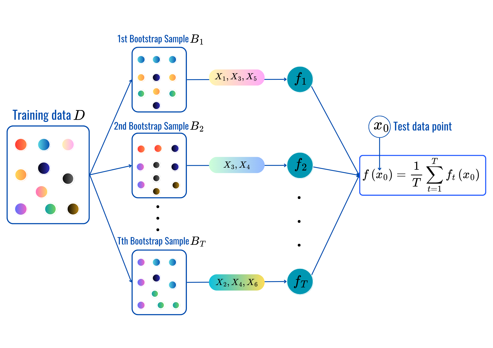
max_featuresmax_depth, min_sample_split, min_samples_leaf and citerion.from sklearn.ensemble import RandomForestClassifier
# Set up Bagging Classifier
rf = RandomForestClassifier()
# Define hyperparameter grid
param_grid = {
'n_estimators': [10, 50, 100, 200], # Number of trees in Bagging
'max_samples': [0.5, 0.75, 1.0], # Proportion of samples per tree
'min_samples_leaf': [2, 3, 5, 10], # Minimum samples per leaf
'criterion': ["gini", "entropy"], # Splitting criterion
}
grid_search = GridSearchCV(rf, param_grid, cv=5, n_jobs=-1, scoring='accuracy')
grid_search.fit(X_train_encoded, y_train)
# Best parameters and corresponding model
best_model = grid_search.best_estimator_
print(f"Best parameters: {grid_search.best_params_}")
# Make predictions with the best model
y_pred = best_model.predict(X_test_encoded)
test_perf = pd.concat([test_perf, pd.DataFrame(
data={'Accuracy': accuracy_score(y_test, y_pred),
'Precision': precision_score(y_test, y_pred),
'Recall': recall_score(y_test, y_pred),
'F1-score': f1_score(y_test, y_pred),
'AUC': roc_auc_score(y_test, y_pred)},
columns=["Accuracy", "Precision", "Recall", "F1-score", "AUC"],
index=["RF"])])
test_perfBest parameters: {'criterion': 'gini', 'max_samples': 1.0, 'min_samples_leaf': 5, 'n_estimators': 100}| Accuracy | Precision | Recall | F1-score | AUC | |
|---|---|---|---|---|---|
| LSVM | 0.852459 | 0.852941 | 0.878788 | 0.865672 | 0.850108 |
| RBF-SVM | 0.819672 | 0.866667 | 0.787879 | 0.825397 | 0.822511 |
| Poly3-SVM | 0.852459 | 0.875000 | 0.848485 | 0.861538 | 0.852814 |
| Bagging | 0.803279 | 0.862069 | 0.757576 | 0.806452 | 0.807359 |
| RF | 0.836066 | 0.870968 | 0.818182 | 0.843750 | 0.837662 |
for t = 1,2,..,T:
Prediction:
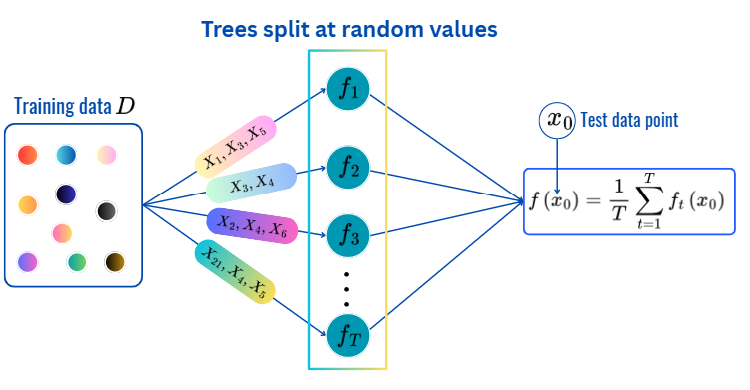
Each method relies on two main ideas:
The individual trees within each method may be too flexible (high variance), however averaging/voting results in more stable predictions.
There are many hyperparameters to be optimized (CV):
T: the number of treesfor t = 1, 2,..., T:
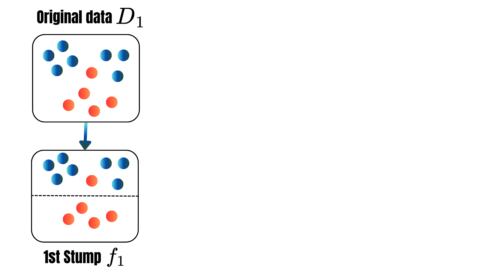
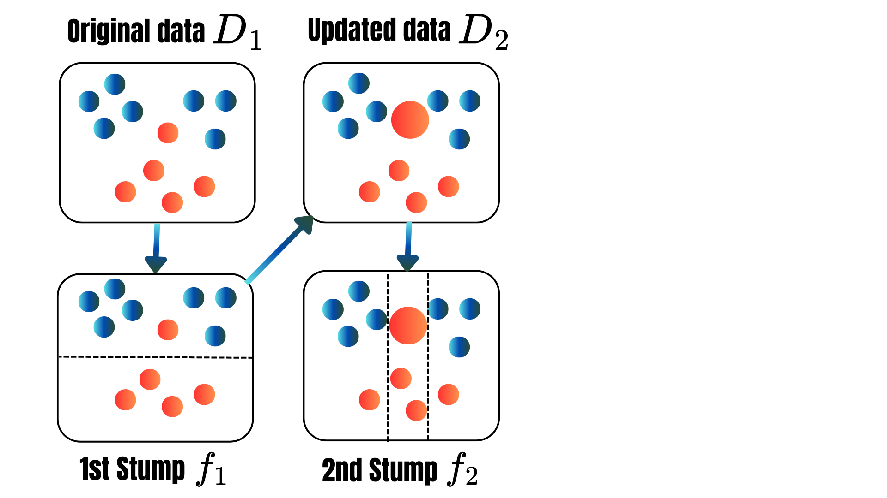
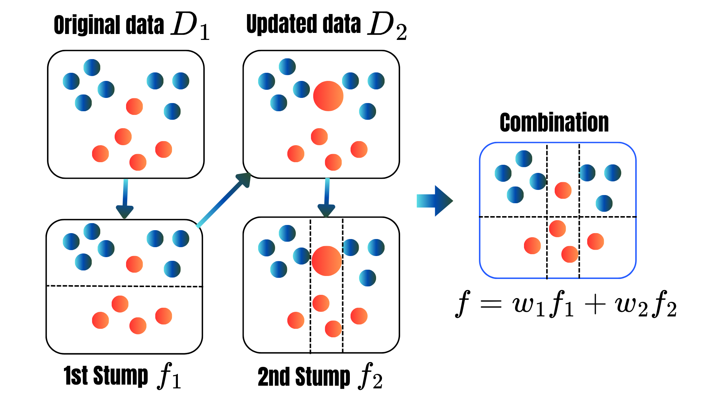
for t = 1, . . . , T:
for t = 1, 2, ..., M:
\[\begin{align*}L(F_t)&=\sum_{i=1}^nL(y_i,F_t(\text{X}_i))+\sum_{m=1}^t\Omega(f_m)\\ \Omega(f_t)&=\gamma T+\frac{1}{2}\lambda\|w\|^2.\\ L(F_t)&\approx \sum_{i=1}^n[g_iF_t(\text{x}_i)+\frac{1}{2}h_iF_t^2(\text{x}_i)]+\Omega(F_t),\\ g_i&=\frac{\partial L(y_i,F_t(\text{x}))}{\partial F_t(\text{x})}\|_{F_t(\text{x})=F_t(\text{x}_i)}\\ h_i&=\frac{\partial^2 L(y_i,F_t(\text{x}))}{\partial F_t(\text{x})^2}\|_{F_t(\text{x})=F_t(\text{x}_i)}. \end{align*}\]
to ensure the efficiency and accuracy of the method.
👉 Check out the notebook.
importances = best_model.feature_importances_
importance_df = pd.DataFrame({'Feature': list(X_train.select_dtypes(include="number").columns)+list(encoder.get_feature_names_out()), 'Importance': importances})
# Sort by importance
importance_df = importance_df.sort_values(by='Importance', ascending=False)
import plotly.express as px
# Plot feature importance using Plotly
fig = px.bar(importance_df, x='Feature', y='Importance', title='Feature Importance (Random Forest)',
labels={'Feature': 'Features', 'Importance': 'Importance Score'},
text=np.round(importance_df['Importance'], 3),
color='Importance', color_continuous_scale='Viridis')
fig.update_layout(xaxis_title="Features", yaxis_title="Importance Score", coloraxis_showscale=False, height=300)
fig.show()